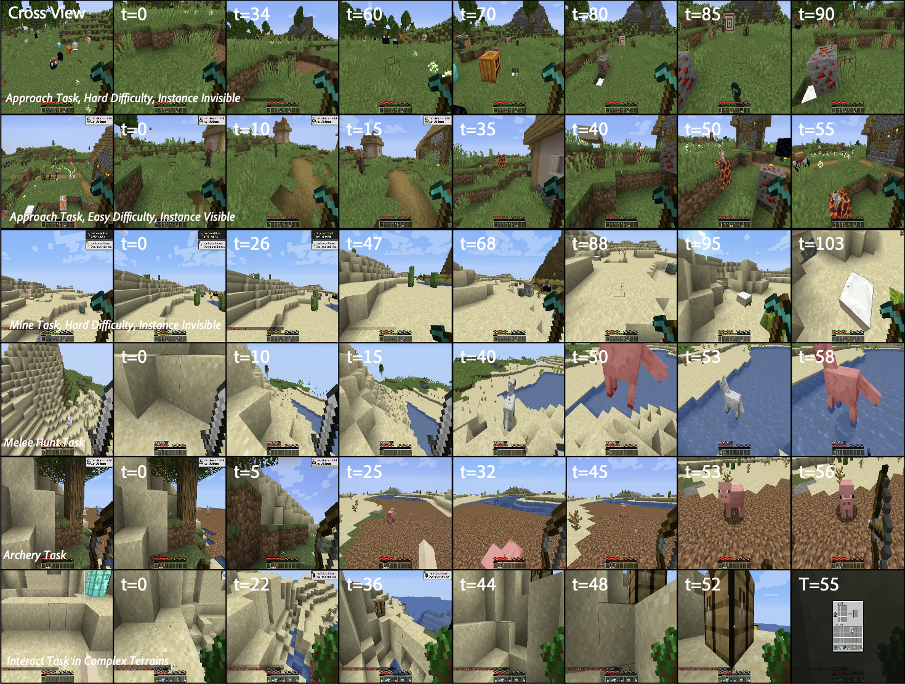

Open
New views, object layouts, and interaction scenarios keep the task space from collapsing into memorization.
Research release 2025
ROCKET-3 teaches a visuomotor agent to connect a goal it can see with a world it is standing in—then refine that skill through reinforcement learning.

02 / THE CORE IDEA
Language names a task. A visual goal specifies where the task lives. ROCKET-3 turns that cross-view relationship into a reusable interface for multi-task reinforcement learning.
New views, object layouts, and interaction scenarios keep the task space from collapsing into memorization.
Every task has a measurable target and outcome, making it useful for both expert trajectories and RL rewards.
Procedural synthesis turns a Minecraft world into a stream of training tasks with almost no manual labeling.
Distance and visibility provide a natural path from easy alignment to occluded, long-range interaction.
03 / TRAINING LOOP
Imitation learning gives the policy a broad visual prior. PPO post-training then rewards the spatial reasoning that matters when the target is distant, hidden, or described from another camera.

04 / EVIDENCE
Across Approach, Break, Interact, and Hunt tasks, post-training lifts the average success rate from 7% to 28% while preserving the spatial signals learned during pre-training.

RL turns a 7% baseline into 28% across interaction types. Archery rises from below 1% to 28%.
A constraint against the pre-trained policy prevents collapse while the agent learns long-horizon interaction.
Visibility and centroid heads retain their performance after RL, a signal that the policy is learning more than a shortcut.
05 / ZERO-SHOT TRANSFER
With a light action mapping, the same policy moves from Minecraft into DMLab, Unreal, and a real robot car—without retraining on the target world.

06 / IN MOTION
Short rollouts from the release. Switch environments to see the same interaction vocabulary travel from a Minecraft task to unseen worlds.
07 / OPEN RESEARCH
Read the full method, inspect the training code, or start from the released checkpoint. ROCKET-3 is built to be a useful research artifact, not just a result.
# install the environment
python -m pip install -r requirements.txt
# run a local checkpoint smoke test
python smoke_test.py \
--checkpoint /path/to/rocket3.ckptCITATION
@misc{cai2025scalable,
title={Scalable Multi-Task Reinforcement Learning for Generalizable Spatial Intelligence in Visuomotor Agents},
author={Cai, Shaofei and Mu, Zhancun and Xia, Haiwen and Zhang, Bowei and Liu, Anji and Liang, Yitao},
year={2025},
eprint={2507.23698},
archivePrefix={arXiv},
primaryClass={cs.RO}
}